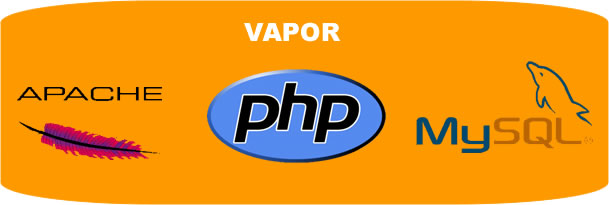
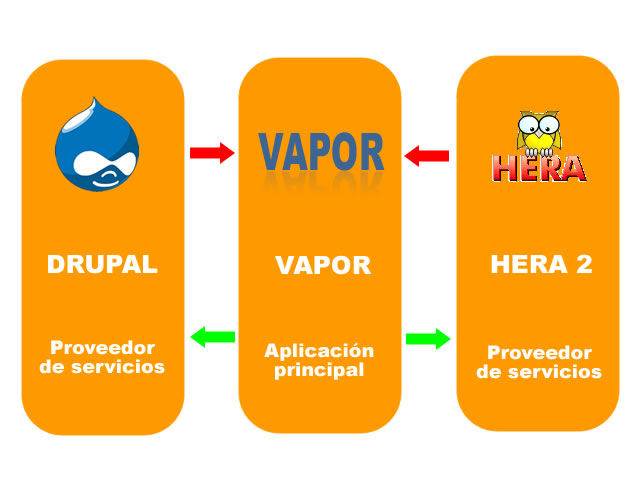
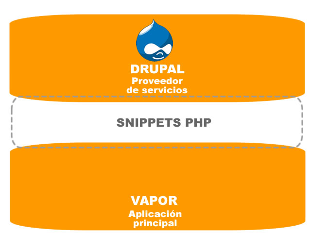
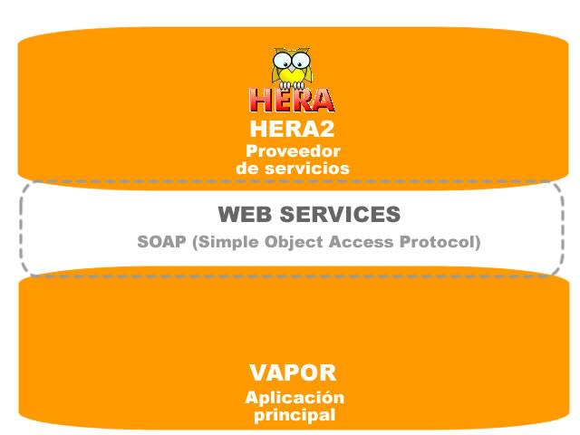
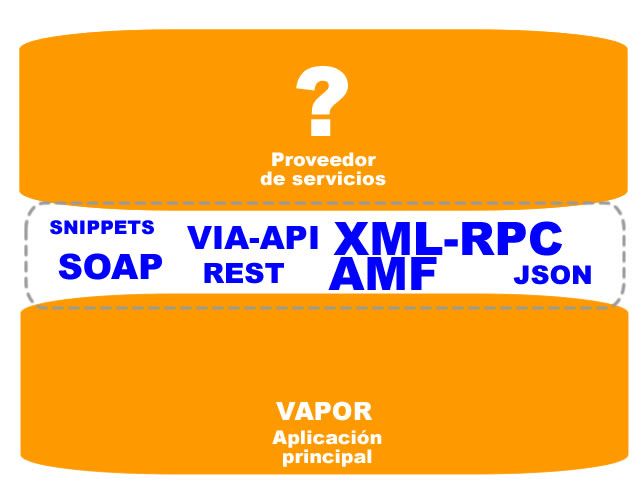

Juan Gabriel Sáenz, juangabriel@sidar.org
Pulsar la barra espaciadora para ir a la siguiente transparencia
Ofrecer una herramienta basada en la web que permita a usuarios comunes y a expertos en diseño, desarrollo web y accesibilidad comunicarse con los webmasters de aquellos sitios que los usuarios han encontrado poco accesibles, sea cual sea su apreciación de la accesibilidad, al mismo tiempo que brinda una comunidad de apoyo para los webmasters, que, aprovechando las características de red social de Vapor, podrán encontrar apoyo para realizar las revisiones necesarias a su sitio web y corregir las barreras de accesibilidad encontradas.
Vapor es un desarrollo propio de la Fundación Sidar liberado como software libre con licencia GPL.
Vapor es una aplicación web multiplataforma desarrollada en PHP y MySQL.

Vapor es un desarrollo que se instala sobre el CMS Drupal para aprovechar los servicios básicos que éste ofrece.
Vapor se integra con Drupal (o cualquier otro sistema) y con HERA 2, el cual es el motor de análisis de accesibilidad de páginas web que utiliza Vapor para generar los informes para los webmásters.

Vapor aprovecha el framework de Drupal para generar los servicios básicos de idioma, roles, autenticación, logs y configuración.
La integración de las dos herramientas se hace a través del estándar de snippets para Drupal.

Vapor aprovecha el enorme potencial de Hera 2 para realizar evaluaciones automáticas de accesibilidad web para la generación de los informes que son enviados a los webmásters.
La integración de las dos herramientas se hace a través de web services.

Vapor puede integrarse con otras aplicaciones como pueden ser: CMS, desarrollos propios, redes sociales (facebook, twitter, etc) para ofrecer otras funcionalidades en contextos diversos. Estas integraciones dependen de la tecnología de la nueva aplicación, y se soportan protocolos SOAP, REST, AMF, XML-RPC o integraciones a través de API-KEY (Facebook, Twitter, etc.).

Este es un proyecto de software libre y tú también puedes ayudarnos a mejorar Vapor. A continuación enumeramos las actividades en las que puedes prestarnos tu valiosa ayuda como voluntario:
Te invitamos a usar Vapor, con tu ayuda podremos tener una web más accesible e incluyente.
Puedes crear una cuenta, o si lo prefieres puedes iniciar sesión con tu cuenta de OpenID.
! Le agradecemos a Ustedes, el público que hace posible las jornadas !
Y por supuesto, !agradecemos a la Organización de las Jornadas Sidar 2010 de la Rioja!